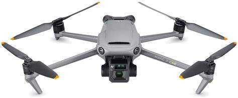
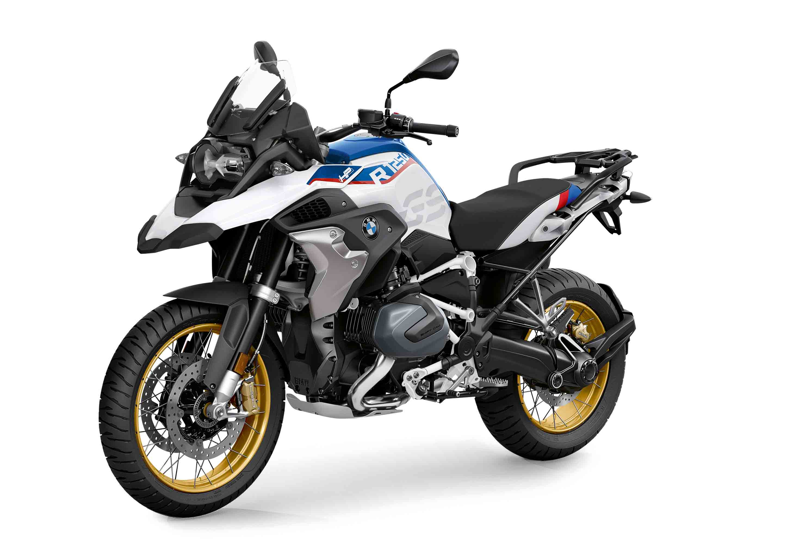

Quien es Andres Martinez?
Andrés Martínez es un joven de 29 años, ingeniero electrónico de profesión, padre de una princesa de 2 años, apasionado por las motos y los drones. Con expectativas muy altas de este bootcamp, buscando un crecimiento profesional en otro campo que desde la universidad a sido de su interes y que le permita poder estar más tiempo con su hija
Mis Hobbies
- Pasar tiempo con mi familia
- Leer
- Jugar futbol
- Jugar videojuegos
Mi receta favorita
Spaghetti con salsa boloñesa
- Se cocinan los vegetales
- Tomaté
- Cebolla
- Zanahoria
- Se sofrie la carne
- Se licua los vegetales previamente cocinados
- Se mezcla la salsa resultante con la carne
- Se añaden los spaghettis previamente cocinados en agua caliente
Mi lugar seguro
| Opciónes | Referencias | Paginas oficiales |
|---|---|---|
| Dron | DJI (dji mavic 3 cine) |  |
| Moto | BMW R1250 GS |  |
| Carro | Mercedes Benz AMG GLC |